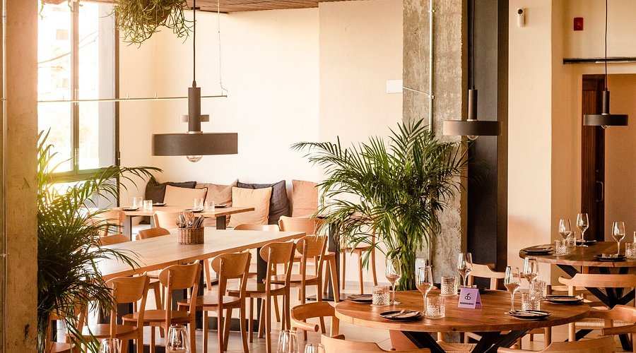
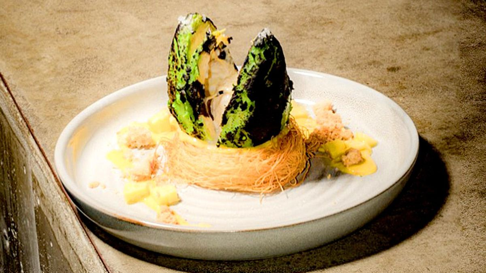

Nuestra filosofía
En Anónimo Restaurante creemos en la cocina sincera y artesanal, basada en productos locales y de temporada. Nuestra filosofía apuesta por el sabor, la armonía y el placer de compartir en buena compañía.
Menú degustación
Nuestro menú degustación combina sabores de temporada con técnicas innovadoras. Una propuesta gastronómica para descubrir la esencia de Anónimo.